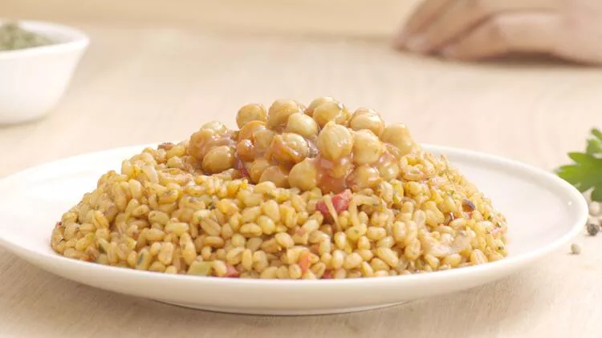
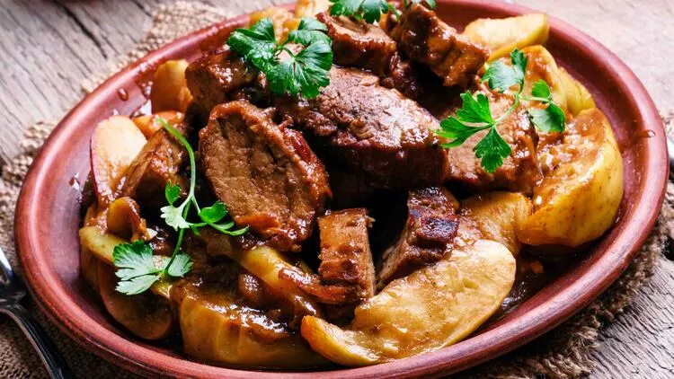
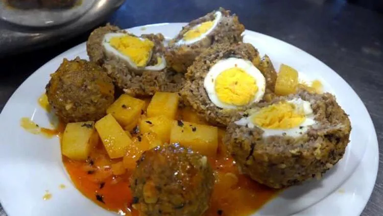
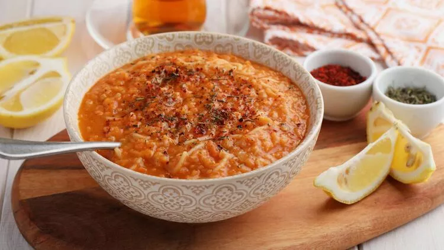

Van Şehri |
|
Yemekler 
Çiriş pilavıÇiriş otu ile hazırlanan çiriş pilavı, Van'ın yöresel pilavı olarak bilinir. İçerisinde çiriş haricinde, nohut, karabiber ve tuz bulunur. Çiriş pilavı ayrıca çok faydalı bir yemektir. Çiriş otunun son derece besin değeri ve vitamin değeri yüksektir. Bağışıklık sistemini güçlendirir, basur tedavisinde kullanılır. 
Ayva yemeğiVan'ın en ilginç yemeklerinden biri de ayva yemeğidir. Ayva yemeği et ile meyvenin buluştuğu, bayram ya da özel günlerde misafirlere ikram edilen, yapılışı oldukça zahmetli bir yemektir. Ancak lezzeti kusursuzdur. Acem köftesiVan mutfağına özgü en değişik lezzetlerden biri olan acem köftesini mutlaka denemelisiniz. Görüntüsü sulu köfteyi andırsa da içeriği çok farklıdır. Köftesi bulgur, pirinç ve kıymadan hazırlanır. İç bölümü ise haşlanmış yumurta kaplanır. Sengeser yemeğiSengeser yemeği Van'ın hiçbir yerde bulamayacağınız en yöresel yemeğidir. Senseger yemeğinin ana bileşenleri soğan ve mercimektir. Bu yemeği en lezzetli yapan püf nokta ise soğanların çok ince bir şekilde doğranmasıdır. |
Şehir Tarihçesi Yemekler Gezi Rehberi Ulaşım Duyurular Haberler İletişim |
| Bir Umut Furkan Berrak ürünüdür ©2021 | |